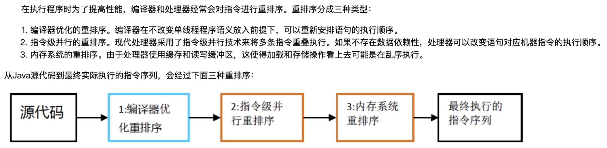
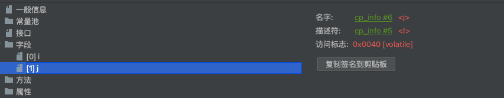

并发三大特性
所有讲并发编程的书籍都会讲到并发编程的三大特性，这是并发编程中所有问题的根源，我们只有深刻理解了这三大特性，才不会编写出漏洞百出的并发程序，才不会遇到问题时无从下手，才不会对自己的程序没有信心。
这三大特性是：
- 原子性 : 所有操作要么全部成功，要么全部失败。
可见性: 一个线程对变量进行了修改，另外一个线程能够立刻读取到此变量的最新值。
有序性: 代码在执行阶段，并不一定和你的编写顺序一致。
其中原子性比较简单，熟悉事务ACID的都清楚，事务最重要的就是原子性，可见性暂时跳过，我们日后在谈，这次我们重点来分析有序性问题，这个是相对较难的地方。
有序性
学习过计算机组成原理的同学都知道，cpu为了提高效率，指令的执行并不是一条指令执行完成之后再执行下一条，而是采用流水线的方式执行的。第一条执行在读取内存的过程中，这个等待的时间就可以进行第二条执行了，也就是说发生了乱序或者叫做指令的重排。这种优化，对于单线程是没问题的，因为优化的前提一定是不能影响结果的正确输出，但对于多线程而言就不太友好了。

往上有一个美团工程师给出的一个实验，可以观察出乱序问题。
1 |
|
在这个实验中，我们可以分析一下，理论上是不会出现x=0,y=0的情况，但只要多次运行，确实会发现有这个情况。也就证明了乱序。
内存屏障
我们前面观察到了乱序的问题，这种乱序在多线程的时候可能会出问题的，那么如何解决呢？首先我们要知道volatile是可以解决有序性的问题，其实它的原理也是内存屏障。
概念
我们要解决乱序问题，说白了就是 我们想办法让你先后执行的两条执行就应该串行执行。而不应该打破原来的顺序。最简单的方法就是加锁。第一条指令执行的时候，直接锁定相关的区域，第二条指令想要执行只能等。但cpu为了提高执行顺序，通常会采用内存屏障。
内存屏障就是说，加这么一道指令，屏障前的指令不能跑到屏障后，屏障后的指令也不能在屏障前执行。
cpu保障有序性
不同的cpu有不同的实现，这里我们还是以intel的x86为例
X86 CPU内存屏障:
sfence:在sfence指令前的写操作当必须在sfence指令后的写操作前完成。
lfence：在lfence指令前的读操作当必须在lfence指令后的读操作前完成。
mfence：在mfence指令前的读写操作当必须在mfence指令后的读写操 作前完成。
intel lock汇编指令
原子指令，如x86上的”lock …” 指令是一个Full Barrier，执行时会锁住内存子系统来确保执行顺 序，甚至跨多个CPU。Software Locks通常使用 了内存屏障或原子指令来实现变量可见性和保持 程序顺序
JVM内存屏障
在JVM层面,我们看到的也仅仅是JVM规范中提的，不同的JVM有不同的实现。
JSR内存屏障:
LoadLoad屏障： 对于这样的语句Load1; LoadLoad; Load2，在Load2及后续读取操作要读取的数据被访问前，保证Load1要读取的数据被读取完毕。
StoreStore屏障：对于这样的语句Store1; StoreStore; Store2，在Store2及后续写入操作执行前，保证Store1的写入操作对其它处理器可见。
- LoadStore屏障：对于这样的语句Load1; LoadStore; Store2，在Store2及后续写入操作被刷出前，保证Load1要读取的数据被读取完毕。
- StoreLoad屏障：对于这样的语句Store1; StoreLoad; Load2，在Load2及后续所有读取操作执行前，保证Store1的写入对所有处理器可见。
Volatile的实现
编译器层面

可以看到volatile关键字编译完之后，在字节码的体现是在修饰符上。
JVM层面
在JVM层面是通过内存屏障:
写操作:
1 | StoreStoreBarrier |
读操作:
1 | LoadLoadBarrier |
操作系统硬件层面
想要观察在硬件层面是如何做的，就需要查看字节码对应的汇编指令，看看是使用什么cpu指令来保证有序的。操作过程比较复杂，可以参考博客：https://www.cnblogs.com/xrq730/p/7048693.html
1 | 0x0000000002931351: lock add dword ptr [rsp],0h ;*putstatic instance |
最终结论是: 依靠Lock 指令。
总结
对于有序性的解决，对cpu而言，可能会使用cpu的内存屏障或者lock指令，在JVM层面，也有相应的内存屏障。不同的的cpu有不同的实现，不同的JVM由于不同的实现，所以比较复杂 不能一概而论。但是 我们一定要注意一点，就是区分层次来看。

...
...
This is copyright.